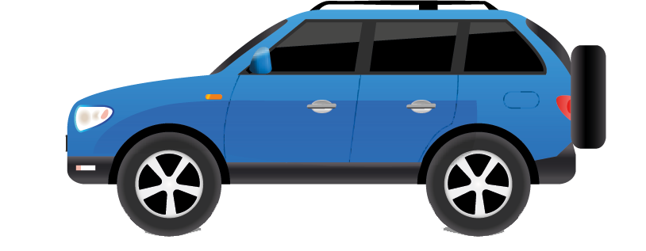
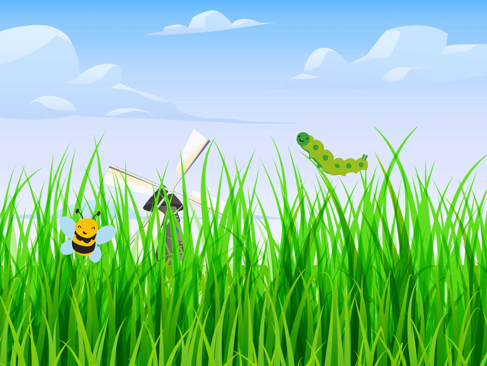
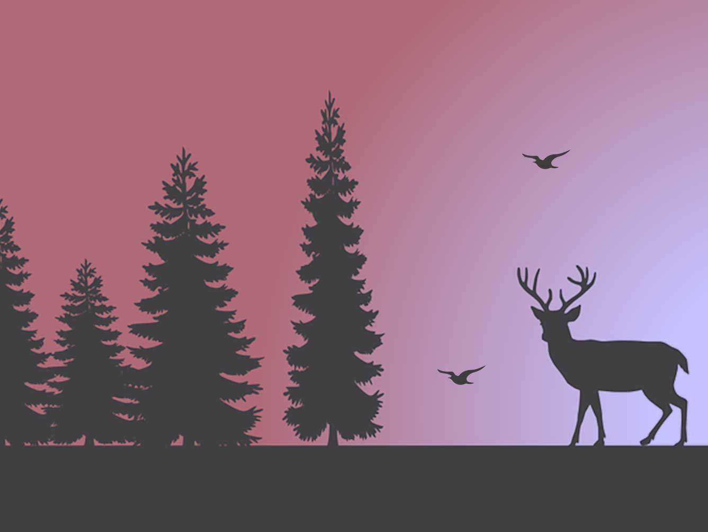
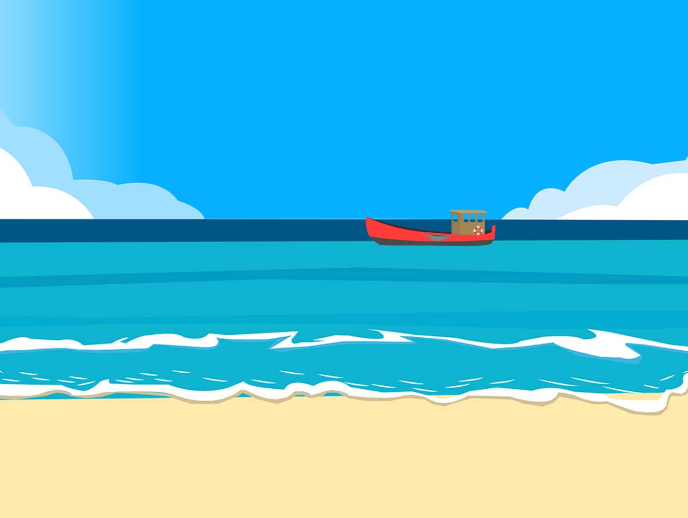

Neue Austellung: Monekulare Tiefenkriterein


Das hört sich aber interessant an. Dort möchte ich hin
Da hinten in der Ferne ist das Museum. Nun schnell zum Bahnhof.
Oh nein, was für eine Schlange. Ich kann die Ersten kaum erkennen
Mein Zug ist gerade weg. Muss ich wohl auf den nächsten warten
Was für eine Aussicht
Endlich angekommen


